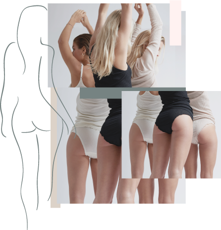

FRI FRAGT & FRI RETURNERING


"
Jeg har skabt dette brand med udgangspunkt i, at alle kvinder fortjener basistøj af god kvalitet.
Derfor har jeg ud fra mine egne personlige oplevelser skabt Seamless Basic. Tøjet skal være med til at opfylde de grundlæggende behov og formål i din daglige garderobe.
"
Alt tøjet hos Seamless Basic er, som navnet hentyder, syet uden sømme. Ved udviklingen af sømløst tøj undgår man at skære for meget af stoffet og derved reduceres mængden af stofspild.
 Hos Seamless Basic er kvaliteten højeste prioritet, derfor er alt tøjet lavet af nøje udvalgte stofkvaliteter. Stofferne som benyttes er lavet af delikate fibre, og jeg tror og håber, at du vil nyde komforten ved at bære dem.
Den gode kvalitet gør sig gældende lige meget om du foretrækker blødhed og afslapning fra bomulden, en opvarmende effekt fra merinoulden eller afkøling og elegance fra silken.
Hos Seamless Basic ønsker vi at kvaliteten i vores produkter varer ved, så du som kunde kan nyde godt af vores produkter i så lang tid som muligt.
Derfor har vi udarbejdede denne vaskeguide med seks tips, som tager højde for både produktet og miljøet!
Gå længere tid i tøjet, før det vaskes
Følg produktets vaskeanvisning
Undgå produkter med kemikalier
Brug økologisk vaskemiddel der matcher stoftypen
vaske ved lav temperatur
Brud vaskepose til at skåne tøjet
Køber du tøjet lavet af silke eller merinould, vil du modtage din pakke i en smuk æske. Vi håber at du vil gøre brug af æsken til at opbevare dit Seamless Basic tøj eller til andre små ting, som du elsker og gerne vil passe godt på.